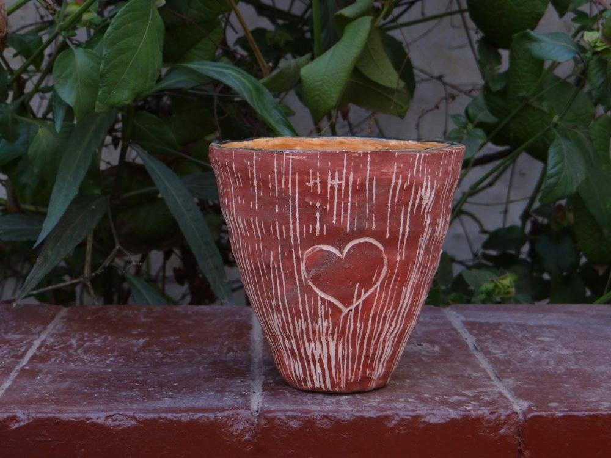
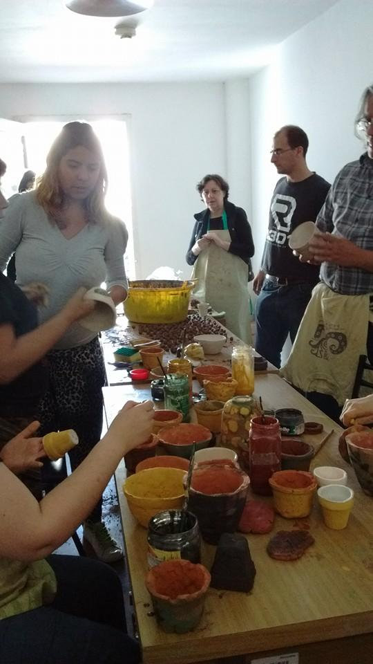
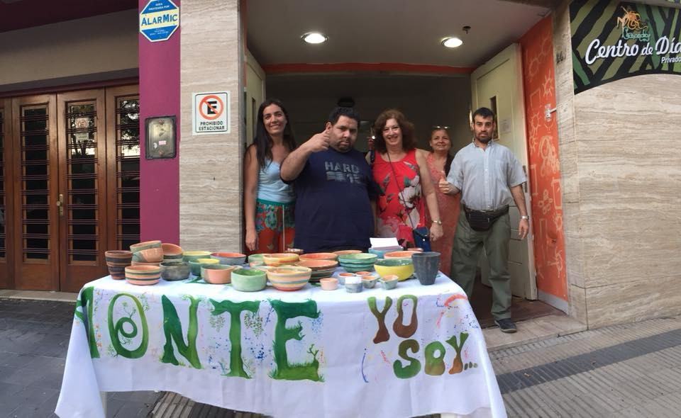
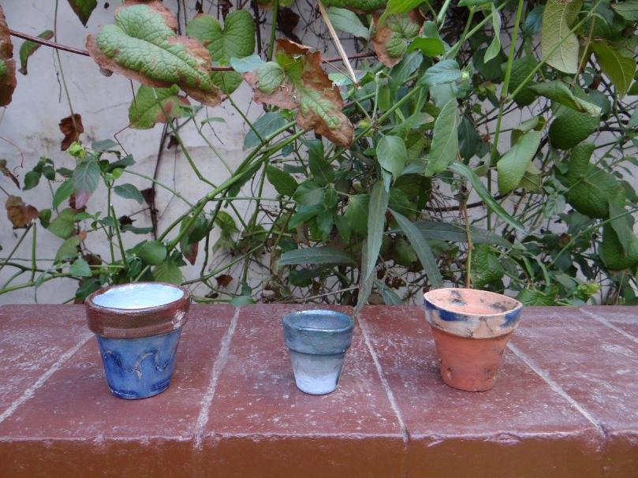

Formación laboral: ATIKUX

El Proyecto de Atikux, trabajo cooperativo comenzó en septiembre de 2015 con un programa de formación de los interesados en el manejo de los materiales a fin de poder realizar piezas de cerámica de calidad.

Se trata de promover una experiencia subjetivante de trabajo cooperativo para la inserción laboral en los jóvenes y adultos con dificultades en el campo de la salud mental, discapacidad y social, que asisten al Centro de Atención Psicosocial Casandra a través de la capacitación laboral y formación en valores que le permitan adquirir habilidades y destrezas en el rubro cerámica y nociones de gestión cooperativa para desenvolverse con independencia en el mundo del trabajo.

Producción de Cerámica
A partir de contar con un horno cerámico se facilitó la producción de piezas de cerámica de calidad y en cantidad: cazuelas de distinto tamaño, ceniceros, tazas, etc.
